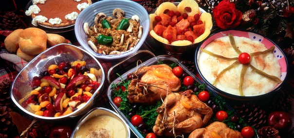

Туристическое агенство |
||
Австрия |
Франция |
Греция |
Кухня |
||
|
 Австрийская кухня сложилась в результате влияния многих стран, которые изначально так или иначе, были связаны с Австрией. Австрийская пища очень вкусная и здоровая. Типичная трапеза состоит из супа, мясного блюда и десерта. Мясные блюда обычно готовятся из говядины, свинины или телятины. Кроме того, на второе могут быть приготовлены блюда из такой прекрасной свежей рыбы, как карп или форель. Австрийцы предпочитают принимать пищу с кружкой одного из местных сортов пива или бокалом австрийского вина. Со времен римского императора Марка Аврелия в Австрии есть и отменные вина, которые непременно стоит отведать. Прием пищи завершается чашечкой кофе или просто рюмкой шнапса. Австрийцы любят посидеть в ресторанах типа „Хойригер“ или в кафе. &dbquo;Хойригер“ – это винные рестораны, где подают местное вино и типичные австрийские блюда. Главным образом, „Хойригеры“ расположены в Вене и в непосредственной близости от нее. Кафе (Kaffeehaeuser) очень популярны среди любителей кофе и кусочка торта, а также среди тех, кто хочет просто отдохнуть и почитать местную или иностранную прессу. Таких кафе в Вене более пятисот. Для разнообразия можно перекусить на улице, попробовав разные сорта сосисок. На открытых рынках, например на венском рынке „Naschmarkt“ довольно часто с лотков продают горячие блюда. |
||
| © Красиков Максим, 2016 | ||